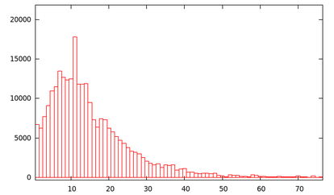

Fun with the Protein Data Bank and Statistics
So... I'm in the lab today thinking about the distribution of amino acids in proteins (yes. very, very nerdy I must say).
Actually,
there was some utility to this as some of my work involves
site-specific tagging of proteins. In particular, I was curious to know
the distribution of lysine residues among all proteins as this is one of
my favourite residues to label/tag.
Of course we don't
have sequences for all proteins in existence but we do know the sequence
for ~100,000 or so proteins (in just the Protein Data Bank alone).
www.rcsb.org
I
will give a tutorial later on use and some nifty things you can do on
the PDB website. But for now, lets continue with the objective I set out
to do. Find the distribution of lysine residues across all protein sequences published in the PDB.
It
was a bit of a hack job but I
basically mashed a bunch of awk one-liners together to achieve the
desired result (shown below).

As you can see, there are ~40,000 or so proteins (~40%) with less than
5 lysine residues. Oddly, there is a bit of a spike at 11 lysines...
I plan to do more PDB statistics in the future.